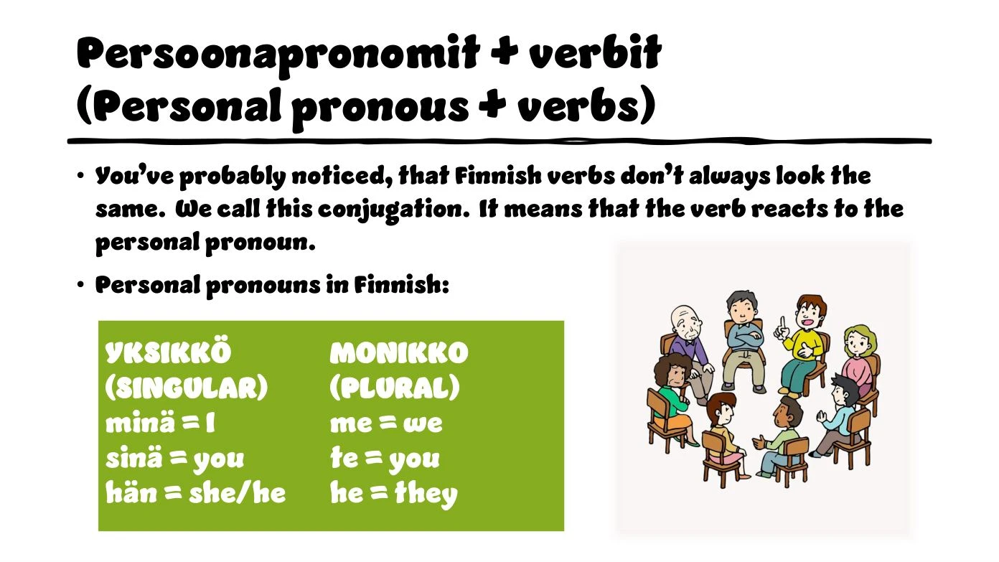
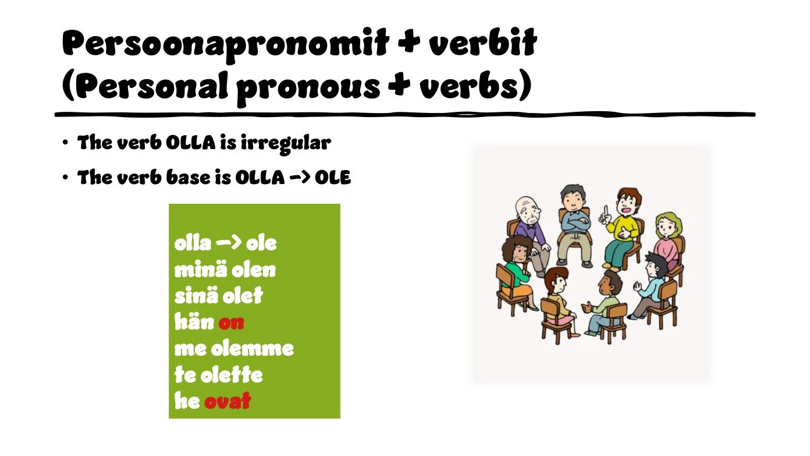
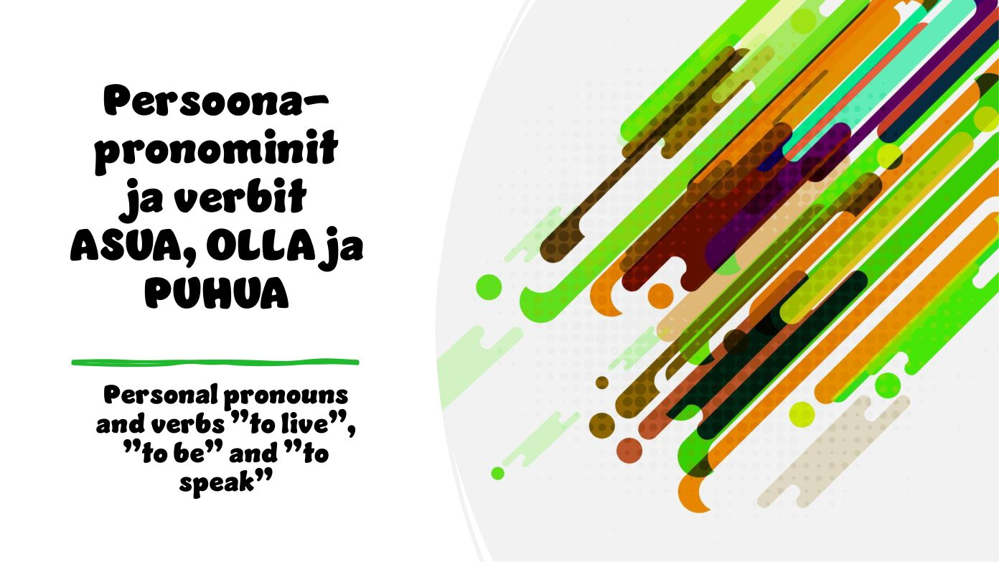

K200DJ96 芬兰语1 · 第 06 / 13 讲
Tunti 6 · 人称代词与第一类动词
Personal Pronouns and Verb Type 1
所属章节：第 2 章 数字、国家与动词
资料来源 · 4 项 / 已附 0 项
07_Tunti 6/7_Persoonap. + olla,asua,puhua.pdf未附原文件07_Tunti 6/6_Harjoittele, pos + neg verbit.docx未附原文件07_Tunti 6/3_TEKSTI 2 KIRJOITA VASTAUS.html未附原文件08_Tunti 7/1_Verbejä, tyyppi1.pdf未附原文件
未附文件仅列原始名称；版本与核对日期由维护者登记。
本节定位
前五讲的所有句子都只用了两种动词：olla（是）与少数几个背下来的固定说法。从第六讲开始，芬兰语真正的主干出现了——动词变位（konjugaatio）。芬兰语动词随着主语改变词尾，而且人称代词可以省略，因为词尾已经说明是谁。
本讲只处理肯定式与第一类动词（verbityyppi 1），这是全部芬兰语动词里最大的一类：不定式以两个元音结尾（puhua、asua、ostaa、lukea……）。否定式留到第七讲，因为否定式要先把“词干”概念练熟，再加 ei。
学完本讲你能够：
- 背出六个人称代词，并解释为什么
hän不分男女 - 从不定式取出词干（去掉词尾 -a/-ä），再加六个人称后缀
- 完整变位
olla、asua、puhua三个动词 - 说出为什么第三人称单数要写双元音（
puhuu、asuu） - 给 24 个第一类动词配中文意思，并说出其中十个的第一人称形式
- 判断一个动词该跟
-ssa/-ssä还是 partitive（asua Lahdessa / puhua suomea）
6.1 人称代词：六个词，一套逻辑
| 单数 | 中文 | 复数 | 中文 |
|---|---|---|---|
| minä | 我 | me | 我们 |
| sinä | 你 | te | 你们 |
| hän | 他/她 | he | 他们 |
三个要点：
hän同时是“他”和“她”，芬兰语没有语法性别，也没有 he/she 之分；指代物也可以用它te既表示“你们”，也表示礼貌的“您”（虽然现代芬兰语很少用您）- 口语里
hän常被se取代，he常被ne取代（第一讲已见）
英文表述：Finnish has no grammatical gender; hän covers both “he” and “she”, and the plural he covers “they” for people.
6.2 变位的总原则：词干 + 人称后缀
芬兰语动词变位只有两步：
- 取词干：把不定式词尾的 -a/-ä 去掉（puhua → puhu-，asua → asu-）
- 加人称后缀：-n、-t、（第三人称单数不加后缀但拉长元音）、-mme、-tte、-vat/-vät
| 人称 | 后缀 | puhua 的变化 | 说明 |
|---|---|---|---|
| minä | -n | puhun | 词干 + n |
| sinä | -t | puhut | 词干 + t |
| hän | 无后缀，词干末元音拉长 | puhuu | puhu + u |
| me | -mme | puhumme | 词干 + mme |
| te | -tte | puhutte | 词干 + tte |
| he | -vat / -vät | puhuvat | 按元音和谐选 vat 或 vät |
人称代词可以省略，因为后缀已经表明主语：Puhun suomea 与 Minä puhun suomea 都是完整句子。课件特意写“personal pronoun can be used but it is not mandatory”。
Minä puhun suomea, sinä puhut ruotsia.（我讲芬兰语，你讲瑞典语）——对比时保留代词更自然。6.3 第一类动词的识别：不定式以两个元音结尾
芬兰语把动词分成六类，第一类（verbityyppi 1）的特征是不定式以两个元音结尾：
| 不定式 | 词尾 | 词干 |
|---|---|---|
| puhua | -ua | puhu- |
| asua | -ua | asu- |
| ostaa | -aa | osta- |
| lukea | -ea | luke- |
| ymmärtää | -ää | ymmärrä- |
| itkeä | -eä | itke- |
| tanssia | -ia | tanssi- |
| kysyä | -yä | kysy- |
取词干的办法统一是：去掉最后一个元音。puhua 去掉 a → puhu；ostaa 去掉第二个 a → osta；ymmärtää 去掉第二个 ä → ymmärrä。
英文表述：Verb type 1 infinitives end in two vowels; the stem is formed by dropping the final vowel, and the personal endings are added to that stem.
puhua 去掉 a 得 puhu-，不是 puhua-，也不是 puh-。写成 minä puhuan 或 minä puhn 都是典型错误。6.4 三个核心动词的完整变位
| 人称 | olla（是） | asua（住） | puhua（说） |
|---|---|---|---|
| minä | olen | asun | puhun |
| sinä | olet | asut | puhut |
| hän | on | asuu | puhuu |
| me | olemme | asumme | puhumme |
| te | olette | asutte | puhutte |
| he | ovat | asuvat | puhuvat |
看三列的第 3 行：on 最短、asuu 与 puhuu 都把词干末元音拉长。规则是“第三人称单数不加后缀，而是把词干最后一个元音延长”，所以 asu- → asuu、puhu- → puhuu。olla 是例外，直接就是 on。
第 6 行 asuvat / puhuvat 用的是 -vat；若词干含前元音，则用 -vät：kysyä → kysyvät、itkeä → itkevät。这是元音和谐在动词上的又一次出现。
hän 一列尤其容易丢分，因为 asuu / puhuu 的双元音常被写成单写。6.5 olla 是不规则动词
olla 的词干不是 olla-，而是 ole-：olla → ole-。加后缀后得到 olen / olet / on / olemme / olette / ovat。其中 on 与 ovat 仍是完全不含 ole- 的形式，必须单独记。
olla 的三种常见用途：
- 表身份/状态：
Minä olen opiskelija.（我是学生） - 表存在/位置：
Helsinki on Suomessa.（赫尔辛基在芬兰） - 构成否定式的基础（第七讲）：
en ole
英文表述：olla is irregular; its stem is ole-, and the 3rd person singular on and plural ovat are irregular forms to memorise separately.
6.6 动词与格的搭配：asua 要 -ssa，puhua 要 partitive
动词决定后面名词的格，这是芬兰语最需要“成对记”的地方：
| 动词 | 搭配的格 | 例句 |
|---|---|---|
| asua（住） | -ssa / -ssä（inessive） | Asun Lahdessa. / Asun Helsingissä. |
| puhua（说某种语言） | partitiivi | Puhun suomea. / Puhun venäjää. |
| opiskella（学某学科） | partitiivi | Opiskelen sähkötekniikkaa. |
| olla（是） | nominatiivi | Olen opiskelija. |
| olla töissä（在……工作） | -ssa / -ssä 或 -lla / -llä | Olen töissä sairaalassa. / Olen töissä yliopistolla. |
asua 用 inessive 是因为“住在某个空间内部”；puhua 用 partitive 是因为说的语言是“部分/一种”，与第四讲“数字后 partitive”同源——都是“未穷尽的量”。
Asun Lahti ✗（应为 Asun Lahdessa）；Puhun suomi ✗（应为 Puhun suomea）。这两句在口试第 12、13 题里必出现。6.7 二十四个第一类动词
| 不定式 | 中文 | minä 形式 |
|---|---|---|
| puhua | 说 | puhun |
| sanoa | 说（某句话） | sanon |
| asua | 住 | asun |
| katsoa televisiota | 看电视 | katson televisiota |
| kysyä | 问 | kysyn |
| ymmärtää | 理解 | ymmärrän |
| istua | 坐 | istun |
| seisoa | 站 | seison |
| ostaa | 买 | ostan |
| maksaa | 付钱 | maksan |
| kirjoittaa | 写 | kirjoitan |
| lukea | 读 | luen |
| nauraa | 笑 | nauran |
| itkeä | 哭 | itken |
| tanssia | 跳舞 | tanssin |
| laulaa | 唱歌 | laulan |
| rakastaa | 爱 | rakastan |
| etsiä | 寻找 | etsin |
| saunoa | 洗桑拿 | saunon |
| ajaa pyörällä | 骑自行车 | ajan pyörällä |
| matkustaa | 旅行 | matkustan |
| odottaa | 等待 | odotan |
| harrastaa | 爱好／从事（爱好） | harrastan |
| kalastaa | 钓鱼 | kalastan |
这张表左侧是词汇任务，右侧是变位任务：先用中文记住意思，再把第一人称形式当作“词干 + n”的练习。注意几个词干变化：lukea → luen（k 脱落）、itkeä → itken（k 脱落）、ajaa → ajan（j 保留、a 单写）。
英文表述：All 24 verbs belong to type 1; several of them undergo consonant gradation in the first person (lukea → luen, itkeä → itken), which is a preview of the gradation rules used in the negative forms.
rakastaa、odottaa、etsiä、harrastaa、katsoa 这几个动词后面都跟 partitive（爱某人/等某物/找某物/爱好某活动/看某物）。把它们单独列成一列，与 6.6 的 puhua 一起记。6.8 TEKSTI 2 的七个问题
第七讲的课文 TEKSTI 2 讲一位叫 Ulla 的学生，课后题要求用完整句回答七个问题：
| 问题 | 问的是 | 答句结构 |
|---|---|---|
| Kuinka vanha Ulla on? | 年龄 | Ulla on … vuotta. |
| Missä Ulla asuu? | 住处 | Ulla asuu …-ssa/-ssä. |
| Kenen kanssa Ulla asuu? | 和谁住 | Ulla asuu … kanssa. |
| Missä Ulla opiskelee? | 学校 | Ulla opiskelee …-ssa/-ssä. |
| Mitä Ulla opiskelee? | 专业 | Ulla opiskelee …-a/-ä. |
| Mikä on Ullan kämppiksen nimi? | 室友名字 | Hänen nimi on … |
| Mitä Ullan kämppis opiskelee? | 室友专业 | Hän opiskelee …-a/-ä. |
这七个问题把前六讲的全部句型串起来了：年龄用 partitive（第四讲）、住处用 inessive（本讲 6.6）、和谁住用 kenen kanssa（属格，第十讲会正式讲）、专业用 partitive（第八讲展开）。
6.9 本讲错误清单
- 第三人称单数写成单写元音：
hän puhu✗ →puhuu - 人称后缀配错：
sinä puhun✗（应为puhut）、me puhuvat✗（应为puhumme） - 词干取错：
minä puhuan✗（应为puhun） he一列漏掉 -vät 的元音和谐：kysyvät写成kysyvatolla第三人称单数写成olen✗（应为on）
第一类动词不定式以两个元音结尾（puhua, asua, ostaa, kysyä）。变位两步：去掉最后一个元音得词干 puhu-，再加 -n / -t / 长元音 / -mme / -tte / -vat(-vät)。第三人称单数不加辅音词尾而是拉长词干末元音，所以 asuu、puhuu 必须双写；he 的 -vat 还是 -vät 由元音和谐定（kysyvät）。人称后缀已表明主语，代词可省，但对比时保留更自然：Minä puhun suomea, sinä puhut ruotsia.。三个动词决定三种格，是口试高频错句：asua 接内格 Asun Lahdessa、puhua 接部分格 Puhun suomea、olla 接主格 Olen opiskelija。olla 是不规则，词干 ole- 但 on / ovat 单独记；hän 不分性别，口语常被 se 取代。第七讲会在此基础上加否定式与辅音交替。
原版图页（源 PDF 插图页）




听力与视频材料（本地可播）
preload="none" 表示打开页面不会自动下载，点播放才开始加载。听力技巧：第一遍抓大意，第二遍跟读，第三遍听写关键词。| Suomi / Finnish | 中文 | English 说明 / 例句 |
|---|---|---|
| persoonapronomini | 人称代词 | minä, sinä, hän, me, te, he. |
| konjugaatio | 变位 | Changing the verb according to the person. |
| verbityyppi 1 | 第一类动词 | Infinitive ends in two vowels: puhua. |
| verbivartalo | 动词词干 | The infinitive minus the final vowel. |
| preesens | 现在时 | The present tense, formed from the stem + personal endings. |
| minä | 我 | 1st person singular. |
| sinä | 你 | 2nd person singular. |
| hän | 他/她 | No grammatical gender in Finnish. |
| me | 我们 | 1st person plural. |
| te | 你们／您 | 2nd person plural, also polite singular. |
| he | 他们 | Plural of hän; colloquially ne. |
| olla | 是 | Irregular: olen, olet, on, olemme, olette, ovat. |
| asua | 住 | Governs the inessive: asun Lahdessa. |
| puhua | 说 | Governs the partitive for languages: puhun suomea. |
| puhun | 我说 | Stem puhu- + -n. |
| puhuu | 他/她说 | 3rd person singular lengthens the final vowel. |
| puhuvat | 他们说 | Stem + -vat. |
| asutte | 你们住 | Stem asu- + -tte. |
| opiskella | 学习 | Governs the partitive: opiskelen sähkötekniikkaa. |
| kämppis | 室友（口语） | From kämppäkaveri; kämppiksen = genitive. |
变位：puhun, puhut, puhuu, puhumme, puhutte, puhuvat。
逐形：词干 puhu-。第 1、2 人称加 -n / -t；第 3 人称不加后缀，把词干末的 u 拉长成 puhuu；复数加 -mme / -tte / -vat。
为什么不是 puhut 表示“他说”：因为 -t 固定是第二人称（你）。第三人称的标志就是“没有后缀 + 长元音”。
缺项：OLLA 的 sinä / hän / te / he；ASUA 的 minä / sinä / me / te；PUHUA 的 minä / hän / me / he。
补全：olet, on, olette, ovat；asun, asut, asumme, asutte；puhun, puhuu, puhumme, puhuvat。
检查法：把六个人称按 -n / -t / 长元音 / -mme / -tte / -vat 的顺序默念一遍，再看表格里给出的那一格是否在那个位置上。
原句（错）：Minä asun Lahti. Minä puhun suomi.
改：Minä asun Lahdessa. Minä puhun suomea.
分析：asua 要求 inessive，Lahti 的词干是 Lahde-（t → d 交替），加 -ssa 得 Lahdessa；puhua 要求 partitive，suomi 的词干变 suome-，加 -a 得 suomea。
迁移：凡是“住/在某个空间”想到 -ssa/-ssä；凡是“说某种语言/学某个学科”想到 partitive。
原句：Minä puhun suomea ja sinä puhut ruotsia.
省略：Puhun suomea ja puhut ruotsia.
分析：-n 与 -t 已经区分了两个人，句子仍然清楚。但如果两个动词形式相同（例如都用 -mme），省略就会产生歧义，此时保留代词更好。
结论：代词省略是“可选”，不是“必须”；写作时保留代词更稳妥，口语里省略更自然。
- 补全变位表：
olla的六个人称形式，asua的 hän 形式，puhua的 he 形式。 - 把
Minä asun Lahdessa.改成“他住在赫尔辛基”（注意 Helsinki 的词干变化）。 - 写出下列动词的 minä 形式：
ostaa、lukea、ymmärtää、itkeä。 - 改错：
Hän puhu suomea. Me puhuvat ruotsia. - 连线上人称与动词（对应课后练习）：
juoda—— minä / sinä / hän / me / te / he 与juon, juot, juo, juomme, juotte, juovat。
答案与思路
1. olen, olet, on, olemme, olette, ovat；asuu；puhuvat。
2. Hän asuu Helsingissä.。Helsinki 的词干是 Helsingi-（k → g 交替），加 -ssä 得 Helsingissä。
3. ostan, luen, ymmärrän, itken。其中 lukea → luen 与 itkeä → itken 有辅音脱落。
4. 两处：Hän puhuu suomea.（第三人称单数长元音）、Me puhumme ruotsia.（me 用 -mme，不是 -vat）。
5. minä juon, sinä juot, hän juo, me juomme, te juotte, he juovat。juoda 属于第二类（-da 结尾），考试连线题里出现，按“去掉 -da 加后缀”处理；本讲先认清形式，第七讲再对照第一类。
asua + inessive、puhua + partitive；24 个第一类动词的词义。hän puhu、hän asu。这是笔试“写动词正确形式”题最常见的失分点。sinä puhun、me puhuvat、he puhumme。默写时按 -n / -t / 长元音 / -mme / -tte / -vat 的固定顺序检查。hän olen ✗、he on ✗。必须写 on / ovat。lukea → luen、itkeä → itken、ajaa → ajan 一组；puhua → puhun、asua → asun 一组。前者在第七讲否定式里还会再变一次，提前分组能省一半力气。变位五步检查
- 看不定式是否以两个元音结尾 —— 是则属于第一类
- 去掉最后一个元音，得到词干（puhua → puhu-）
- 按人称加后缀：-n / -t / 长元音 / -mme / -tte / -vat（-vät）
- 检查第三人称单数是否已把词干末元音拉长
- 检查动词后的名词格：asua → -ssa/-ssä；puhua、opiskella、rakastaa → partitive
课后练习自查清单
- 表格里给出的那一格与我推出的形式是否一致（用已给格反推词干）
olla一列是否写成 on / ovat 而不是 olen / olenhe一列是否按元音和谐选了 -vat 或 -vät- 代词省略后句子是否仍然只有一个可能的解读
| 源文件 | 页码 | 覆盖知识点 |
|---|---|---|
| 07_Tunti 6/7_Persoonap. + olla,asua,puhua.pdf | p2 | 六个人称代词、hän 无性别、动词随人称变化 |
| 07_Tunti 6/7_Persoonap. + olla,asua,puhua.pdf | p3 | 第一类动词取词干（-a/ä pois）与 asua / puhua 的完整变位 |
| 07_Tunti 6/7_Persoonap. + olla,asua,puhua.pdf | p4 | olla 不规则：词干 ole-，on / ovat 单独记 |
| 07_Tunti 6/6_Harjoittele, pos + neg verbit.docx | 前半 | 肯定式问答六题与三张变位表 |
| 07_Tunti 6/3_TEKSTI 2 KIRJOITA VASTAUS.html | 全篇 | TEKSTI 2 的七个问题（年龄、住处、室友、学校、专业） |
| 08_Tunti 7/1_Verbejä, tyyppi1.pdf | 全篇 | 24 个第一类动词的词汇表，本讲用于词义与第一人称练习 |
| 07_Tunti 6/5_Hyviä fraaseja_Useful phrases.html | 全篇 | olla töissä / työskennellä + -ssa/-llä 的工作表达，移到第 8 讲与“学习/工作”合并讲解 |
| （跳过） | — | TEKSTI 2 课文正文未随抽取保留，仅保留课后七问，故本讲以七问的句型覆盖课文 |
| （拓展） | — | 6.7 的“minä 形式”一列在课件里没有，是按第一类规则为 24 个动词逐一推出的；lukea → luen、itkeä → itken 的辅音脱落属于课件未展开的细节，标为拓展 |